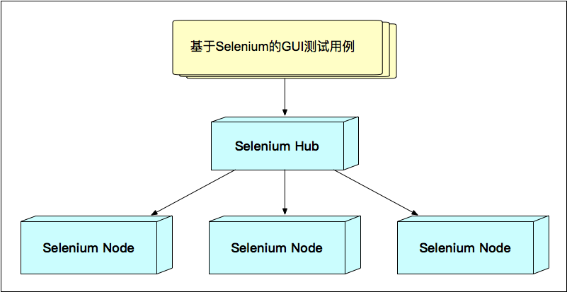
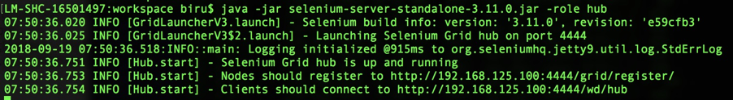
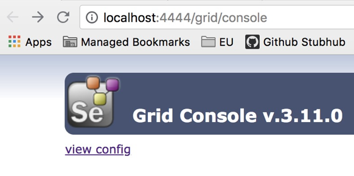
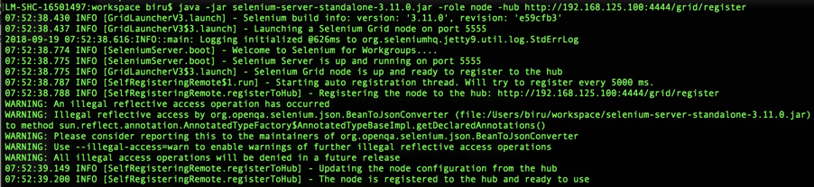
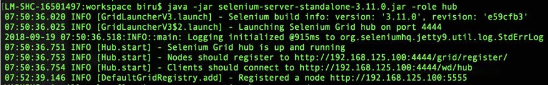
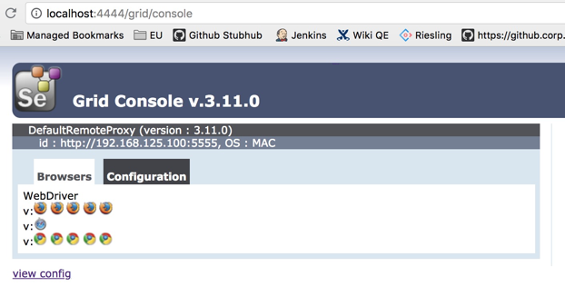

- 00 开篇词 从“小工”到“专家”，我的软件测试修炼之道.md.html
- 01 你真的懂测试吗？从“用户登录”测试谈起.md.html
- 02 如何设计一个“好的”测试用例？.md.html
- 03 什么是单元测试？如何做好单元测试？.md.html
- 04 为什么要做自动化测试？什么样的项目适合做自动化测试？.md.html
- 05 你知道软件开发各阶段都有哪些自动化测试技术吗？.md.html
- 06 你真的懂测试覆盖率吗？.md.html
- 07 如何高效填写软件缺陷报告？.md.html
- 08 以终为始，如何才能做好测试计划？.md.html
- 09 软件测试工程师的核心竞争力是什么？.md.html
- 10 软件测试工程师需要掌握的非测试知识有哪些？.md.html
- 11 互联网产品的测试策略应该如何设计？.md.html
- 12 从0到1：你的第一个GUI自动化测试.md.html
- 13 效率为王：脚本与数据的解耦 + Page Object模型.md.html
- 14 更接近业务的抽象：让自动化测试脚本更好地描述业务.md.html
- 15 过不了的坎：聊聊GUI自动化过程中的测试数据.md.html
- 16 脑洞大开：GUI测试还能这么玩（Page Code Gen + Data Gen + Headless）？.md.html
- 17 精益求精：聊聊提高GUI测试稳定性的关键技术.md.html
- 18 眼前一亮：带你玩转GUI自动化的测试报告.md.html
- 19 真实的战场：如何在大型项目中设计GUI自动化测试策略.md.html
- 20 与时俱进：浅谈移动应用测试方法与思路.md.html
- 21 移动测试神器：带你玩转Appium.md.html
- 22 从0到1：API测试怎么做？常用API测试工具简介.md.html
- 23 知其然知其所以然：聊聊API自动化测试框架的前世今生.md.html
- 24 紧跟时代步伐：微服务模式下API测试要怎么做？.md.html
- 25 不破不立：掌握代码级测试的基本理念与方法.md.html
- 26 深入浅出之静态测试方法.md.html
- 27 深入浅出之动态测试方法.md.html
- 28 带你一起解读不同视角的软件性能与性能指标.md.html
- 29 聊聊性能测试的基本方法与应用领域.md.html
- 30 工欲善其事必先利其器：后端性能测试工具原理与行业常用工具简介.md.html
- 31 工欲善其事必先利其器：前端性能测试工具原理与行业常用工具简介.md.html
- 32 无实例无真相：基于LoadRunner实现企业级服务器端性能测试的实践（上）.md.html
- 33 无实例无真相：基于LoadRunner实现企业级服务器端性能测试的实践（下）.md.html
- 34 站在巨人的肩膀：企业级实际性能测试案例与经验分享.md.html
- 35 如何准备测试数据？.md.html
- 36 浅谈测试数据的痛点.md.html
- 37 测试数据的“银弹”- 统一测试数据平台（上）.md.html
- 38 测试数据的“银弹”- 统一测试数据平台（下）.md.html
- 39 从小作坊到工厂：什么是Selenium Grid？如何搭建Selenium Grid？.md.html
- 40 从小工到专家：聊聊测试执行环境的架构设计（上）.md.html
- 41 从小工到专家：聊聊测试执行环境的架构设计（下）.md.html
- 42 实战：大型全球化电商的测试基础架构设计.md.html
- 43 发挥人的潜能：探索式测试.md.html
- 44 测试先行：测试驱动开发(TDD).md.html
- 45 打蛇打七寸：精准测试.md.html
- 46 安全第一：渗透测试.md.html
- 47 用机器设计测试用例：基于模型的测试.md.html
- 48 优秀的测试工程师为什么要懂大型网站的架构设计？.md.html
- 49 深入浅出网站高性能架构设计.md.html
- 50 深入浅出网站高可用架构设计.md.html
- 51 深入浅出网站伸缩性架构设计.md.html
- 52 深入浅出网站可扩展性架构设计.md.html
- 测试专栏特别放送 浅谈全链路压测.md.html
- 测试专栏特别放送 答疑解惑第一期.md.html
- 测试专栏特别放送 答疑解惑第七期.md.html
- 测试专栏特别放送 答疑解惑第三期.md.html
- 测试专栏特别放送 答疑解惑第二期.md.html
- 测试专栏特别放送 答疑解惑第五期.md.html
- 测试专栏特别放送 答疑解惑第六期.md.html
- 测试专栏特别放送 答疑解惑第四期.md.html
- 结束语 不是结束，而是开始.md.html
- 捐赠
39 从小作坊到工厂：什么是Selenium Grid？如何搭建Selenium Grid？
你好，我是茹炳晟，今天我分享的主题是“从小作坊到工厂：什么是Selenium Grid？如何搭建Selenium Grid？”。
从今天开始，我们就要一起进入测试基础架构这个新的系列了。我将用四篇文章的篇幅，从0到1，为你深入剖析大型互联网企业的测试基础架构设计，以及其原始驱动力，和你探讨测试执行环境设计、测试报告平台设计以及测试基础架构与CI/CD的集成等内容。当然，在这其中还会涉及到很多具有前瞻性的设计创新。
虽说测试基础架构是资深测试开发人员的必备技能，但此时你可能还并不清楚测试基础架构到底指的是什么？没关系，当你阅读完这个系列的文章之后，相信你一定可以对测试基础架构，以及其关键设计有一个清晰、全面的认识。
所以，今天我就先和你分享一下，我眼中的测试基础架构到底是指什么？
什么是测试基础架构？
测试基础架构指的是，执行测试的过程中用到的所有基础硬件设施以及相关的软件设施。因此，我们也把测试基础架构称之为广义的测试执行环境。通常来讲，测试基础架构主要包括以下内容：
- 执行测试的机器；
- 测试用例代码仓库；
- 发起测试执行的Jenkins Job；
- 统一的测试执行平台；
- 测试用例执行过程中依赖的测试服务，比如提供测试数据的统一测试数据平台、提供测试全局配置的配置服务、生成测试报告的服务等；
- …
由于测试基础架构的核心是围绕测试执行展开的，所以我们今天就先来重点讨论一下“执行测试的机器”部分。
这部分内容的展开，我会从早期最简单的方法谈起，然后探讨这个方法在实际执行中的弊端，并由此引出我们今天讨论的主角：Selenium Grid。
先试想一下：你要在一个典型测试场景中，基于某种浏览器去执行Web应用的GUI测试。这时，你首先要做的就是找到相应的机器，并确保上面已经安装了所需的浏览器。如果这台机器上，还没有安装所需浏览器的话，你需要先安装这个浏览器。一切准备就绪后，你就可以使用这台机器执行测试了。
如果你要执行的测试只需要覆盖一种浏览器的话，那就很简单了，你只要事先准备好一批专门的机器或者虚拟机，然后安装好所需的浏览器就可以了。同时，如果测试用例的数量也不是很多的话，你需要的这批机器或者虚拟机的数量也不会很多。执行测试时，你只要将需要使用的那台机器的地址提供给测试用例就可以了。
其实，这种模式就是典型的“小作坊”模式。“小作坊”模式的特点就是，人工维护一批数量不多（通常在30台以内）的执行测试的机器，然后按需使用。
对于小团队来讲，“小作坊”模式的问题并不大。但是，随着测试覆盖率要求的提升，以及测试用例数量的增加，这种“小作坊”模式的弊端就逐渐显现，并被不断放大了。其中，最主要问题体现在以下四个方面：
当Web应用需要进行不同浏览器的兼容性测试时，首先你需要准备很多台机器或者虚拟机，并安装所需的不同浏览器；然后，你要为这些机器建立一个列表，用于记录各台机器安装了什么浏览器；最后，你在执行测试时，需要先查看机器列表以选择合适的测试执行机。
当Web应用需要进行同一浏览器的不同版本的兼容性测试时，你同样需要准备很多安装有同一浏览器的不同版本的测试执行机，并为这些机器建立列表，记录各台机器安装的浏览器版本号，然后执行测试时先查看列表以选择合适的测试执行机。
测试执行机的机器名或者IP发生变化，以及需要新增或者减少测试机时，都需要人工维护这些机器列表。很显然，这种维护方式效率低下，且容易出错。
在GUI自动化测试用例的数量比较多的情况下，你不希望只用一台测试执行机以串行的方式执行测试用例，而是希望可以用上所有可用的测试执行机，以并发的方式执行测试用例，以加快测试速度。为了达到这个目的，你还是需要人工管理这些测试用例和测试执行机的对应关系。
这四种情况的问题，可以归结为：测试执行机与测试用例的关系是不透明的，即每个测试用例都需要人为设置测试执行机。
为了改善这种局面，Selenium Grid就应运而生了。
- 一方面，使用Selenium Grid可以让测试机器的选择变得“透明”。也就是说，我们只要在执行测试用例时指定需要的浏览器版本即可，而无需关心如何找到合适的测试执行机。因为，这寻找符合要求的测试执行机的工作，Selenium Grid可以帮你完成。
- 另一方面，Selenium Grid的架构特点，天生就能很好地支持测试用例的并发执行。
接下来，我就和你详细聊聊到底什么是Selenium Grid，Selenium Grid的架构是什么样的。

图1 Selenium Grid的架构
从本质上讲，Selenium Grid是一种可以并发执行GUI测试用例的测试执行机的集群环境，采用的是HUB和Node模式。这个概念有些晦涩难懂，我来举个例子吧。
假如，现在有个律师事务所要接受外来业务，那么就会有一个老大专门负责对外接受任务。收到任务后，这个老大会根据任务的具体要求找到合适的手下，然后将该任务分发给手下去执行。
那么，这个老大是怎么知道哪个手下最适合处理这个任务呢？其实，这个老大手下的每个人都会事先报备自己具备的技能，这样老大在分发任务的时候，就可以做到“有的放矢”了。
现在，我们再回到Selenium Grid。Selenium Grid由两部分构成，一部分是Selenium Hub，另一部分是Selenium Node。
将这个律师事务所的例子，与Selenium Grid做个类比，它们的对应关系是：
- 这个对外的老大对应的是Selenium Hub；
- 具体执行任务的手下，对应的是Selenium Node；
- 老大接到任务后分配给手下执行的过程，就是Selenium Hub将测试分配到Selenium Node执行的过程；
- 老大的手下向他报备自己技能的过程，就是Selenium Node向Selenium Hub注册的过程。
也就是说，Selenium Hub用来管理各个Selenium Node的注册信息和状态信息，并且接收远程客户端代码的测试调用请求，并把请求命令转发给符合要求的Selenium Node执行。
现在，我们已经搞明白了什么是Selenium Grid，以及Selenium Grid的工作模式。Selenium Grid的功能是不是很酷炫呢？那么，Selenium Grid的搭建是不是很难？接下来，我们就看看如何搭建自己的Selenium Grid吧。
在这里，我会依次给你介绍传统的Selenium Grid和基于Docker的Selenium Grid的搭建方法。通过这部分内容我要达到的目的是，可以帮你搭建起属于自己的Selenium Grid。
传统Selenium Grid的搭建方法
我将通过一个实例，和你分享如何搭建一个传统的Selenium Grid。
现在，我们的需求是，搭建一个具有1个Node的Selenium Grid。那么通常来讲我们需要2台机器，其中一台作为Hub，另外一台作为Node，并要求这两台机器已经具备了Java执行环境。
通过官网下载selenium-server-standalone-.jar文件。这里需要注意的是，不管是Hub还是Node，都使用同一个JAR包启动，只是启动参数不同而已。
将下载的selenium-server-standalone-.jar文件分别复制到两台机器上。
选定其中一台机器作为Selenium Hub，并在这台机器的命令行中执行以下命令：
java -jar selenium-server-standalone-
.jar -role hub
在这条命令中，“-role hub”的作用是将该机器启动为Selenium Hub。启动完成后，这台机器默认对外提供服务的端口是4444。
然后，你就可以在这台机器上通过http://localhost:4444/grid/console观察Selenium Hub的状态，也可以在其他机器上通过http://
启动过程和状态信息，分别如图2、3所示。

图2 Selenium Hub启动过程

图3 没有挂载任何Node的Selenium Hub
在另一台作为Selenium Node的机器上执行以下命令：
java -jar selenium-server-standalone-
.jar -role node -hub http:// :4444/grid/register
这条命令中，“-role node”的作用是，将该机器启动为Selenium Node，并且通过“-hub”指定了Selenium Hub的节点注册URL。
执行成功后，你可以再次打开http://
如果你想自己配置这些内容，可以在启动Node的时候提供不同的启动参数。具体可以指定哪些参数，你可以参考Selenium Grid的官方文档。
如图4所示为Node的启动过程，如图5所示为在Hub端注册Node的过程，如图6所示为挂载完Node后Selenium Hub的状态。

图4 Node的启动过程

图5 Hub端Node注册的过程

图6 挂载完Node后的Selenium Hub状态
完成上述操作后，在测试用例中通过以下代码将测试指向Selenium Hub，然后由Selenium Hub完成实际测试执行机的分配与调度工作。其中，最关键的部分是，创建RemoteWebDriver实例的第一个参数，这个参数不再是一个具体的测试执行机的IP地址或者名字了，而是Selenium Hub的地址。
DesiredCapabilities capability = DesiredCapabilities.firefox(); WebDriver driver = new RemoteWebDriver(new URL(“http://
:4444/wd/hub”), capability);
至此，我们就已经完成了Selenium Grid的搭建工作。正如上面的五个步骤所示，这个搭建过程非常简单。接下来，你就自己动手尝试一下吧。
基于Docker的Selenium Grid的搭建方法
目前，Docker技术的广泛普及，再加上它的轻量级、灵活性等诸多优点，使得很多软件都出现了Docker版本。当然，Selenium Grid也不例外。所以，我也会在这里和你简单介绍一下基于Docker的Selenium Grid搭建过程。
在这个搭建过程中，你将会发现基于Docker运行Selenium Grid的话，机器的利用率会得到大幅提高。因为，一台实体机或者虚拟机，往往可以运行非常多的Docker实例数量，而且Docker实例的启动速度也很快。因此，相对于虚拟机或者实体机方案而言，Docker方案可以更高效地创建Node。
接下来，我们就一起看看如何基于Docker来搭建Selenium Grid吧。
在基于Docker搭建Selenium Grid之前，你需要先安装Docker环境。具体安装方法，你可以参考Docker的官方文档。
接下来，你就可以通过以下命令分别启动Selenium Hub和Selenium Node了。
#创建了Docker的网络grid
$ docker network create grid
#以Docker容器的方式启动Selenium Hub，并且对外暴露了4444端口
$ docker run -d -p 4444:4444 --net grid --name selenium-hub selenium/hub:3.14.0-europium
#以Docker容器的方式启动并挂载了Chrome的Selenium Node
$ docker run -d --net grid -e HUB_HOST=selenium-hub -v /dev/shm:/dev/shm selenium/node-chrome:3.14.0-europium
#以Docker容器的方式启动并挂载了Firefox的Selenium Node
$ docker run -d --net grid -e HUB_HOST=selenium-hub -v /dev/shm:/dev/shm selenium/node-firefox:3.14.0-europium
相比基于实体机或者虚拟机搭建Selenium Grid的方法，基于Docker的方式灵活性更大、启动效率也更高、可维护性也更好。而且，在更高级的应用中，比如当我们需要根据测试用例的排队情况，动态增加Selenium Grid中的Node数量的时候，Docker都将是最好的选择。关于这部分内容具体的细节，我会在后面两篇文章中详细展开。
总结
今天，我从测试基础架构的概念讲起，并和你分享了传统Selenium Grid 和基于Docker的Selenium Grid的搭建方法。
首先，测试基础架构指的是，执行测试的过程中用到的所有基础硬件设施以及相关的软件设施，包括了执行测试的机器、测试用例代码仓库、统一的测试执行平台等。而，今天我针对测试执行的机器这个主题展开了分享。
在最早起的测试执行场景中，采用的方法是由人工维护一批数量不多（通常在30台以内）的执行测试的机器，然后按需使用，完成整个测试过程，这也是典型的“小作坊”模式。随着测试需求日益复杂，“小作坊”模式的缺点也暴露无疑，其中最主要的问题在于：测试执行机和测试用例的对应关系不“透明”，以及由此带来的测试用例并发执行难以实施的问题。
于是，为了解决这个问题，就出现了Selenium Grid。简单地说，Selenium Grid就是一种可以并发执行GUI测试用例的测试执行机的集群环境。由于它采用的是Hub和Node的架构模式，所以很容易就解决了“小作坊”模式的测试用例与测试执行机间的不“透明”关系，以及测试用例并发执行的问题。
而Selenium Grid的搭建也是非常简单。其中，传统Selenium Grid搭建时只要在理解了Selenium Grid架构之后，通过Java命令分别启动Hub和Node即可；而基于Docker的Selenium Grid在搭建时，就更简单了，直接通过Docker命令运行已经封装好的Image就可以了。
这么来看，Selenium Grid功能强大，搭建方法更是简单，也因此已经广泛应用于测试执行环境的搭建中。
思考题
目前Selenium Grid已经有Docker的版本了，你有没有考虑过可以在云端，比如PCF、GCP、AWS上搭建Selenium Grid呢？在我看来，这将是未来的主流方案，你也是类似的看法吗？
感谢你的收听，欢迎你给我留言。
© 2019 - 2023 Liangliang Lee. Powered by gin and hexo-theme-book.